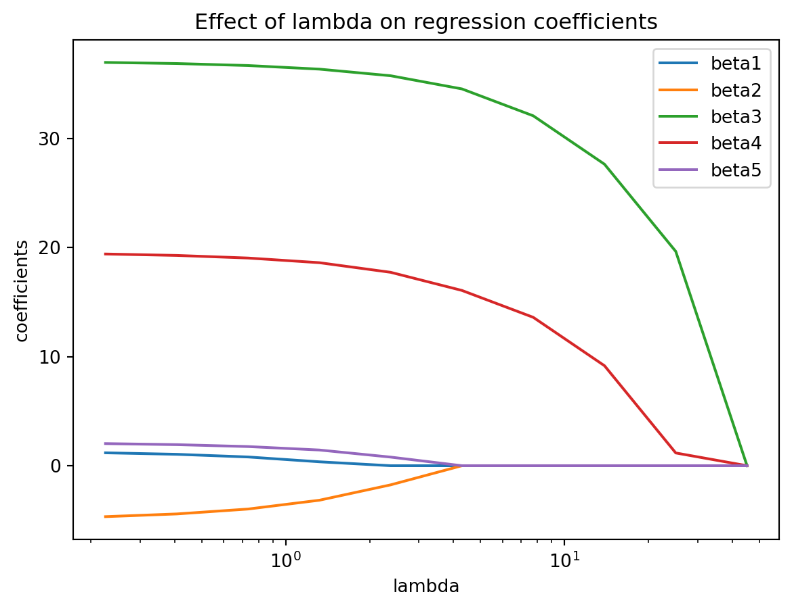

In our linear and logistic regression models, we have always made the assumption that the number of predictors is less than the number of samples. However, that is not always true in the high-dimensionalproblems. This is when the number of predictors is greater than the number of samples analyzed. How could this be? Consider the following examples:
In molecular biology, high-throughput sequencing technologies can make thousands of measurements across a human genome at once, for a single sample. For instance, bulk RNA-seq can in theory measure 20,000 different gene expressions of a sample.
In computer vision, if each sample is an image, then one can derive a vast amount of measurements from an image. Each pixel could be a single measurement, or some defined feature of the image, such as the presence of a face or a cat. One can imagine gathering thousands of measurements from a image.
In Natural Language Processing (NLP), a document can be treated as a sample. A document consists of a large number of words, and one can derive measurements from single words, or a collection of words, such as themes or writing style. The number of measurements can be vast and large.
In mathematical form, we say we have a high dimensional problem when \(p\) , the number of predictors, is large relative to the number of samples:
If we try to run linear or logistic regression in a high-dimensional problem, it will not work, due to the mathematical limits of these tools.
What people typically do in light of a high-dimensional problem is to use a dimensional reduction method, to reduce the number of features lower than the number of samples in the analysis. We will explore two methods today: regularization methods and principal components analysis.
6.1Regularization methods
Regularization methods will let us fit all the predictors in a model, and in the process of creating the model, it will naturally encourage some of the parameter estimates to be zero. This is an example of dimension reduction. The resulting model will have less predictors than samples. The best known regularization techniques are called ridgeregression and lasso regression. For this class, we will use lasso regression, and you can read in the appendix the difference between the two methods.
Recall that in linear regression, we fit a line where the Mean Squared Error (MSE) is minimized. In regularization methods, the quantity we try to minimize for the model includes additional terms:
\[
minimize(MSE + \lambda \cdot Parameters)
\]
What is going on here?
When \(MSE\) is minimized, the model gives the shortest distance to the data points, just like we did in linear regression.
When the \(Parameters\) are minimized (such as \(\beta_1, … \beta_p\)), it reduces the magnitude of the parameters towards zero. This reduces the number of predictors being used in the final model, performing dimension reduction.
The tuning parameter (sometimes called hyperparameter) \(\lambda\) (“lambda”) serves to control the balance between minimizing the \(MSE\) vs. minimizing the \(Parameters\). When \(\lambda=0\), we just have to minimize the \(MSE\), ie. linear regression. When \(\lambda\) is large, then we start to minimize \(Parameters\) more and encourages some of the parameter estimates to be zero. Selecting the appropriate \(\lambda\) is important in the model training process, and we will see how to do that in the Cross-Validation section below.
Let’s see an example of the effect of \(\lambda\) on a model with 5 predictors, parameter weights \(\beta_1\)… \(\beta_5\).
import pandas as pdimport seaborn as snsimport numpy as npimport matplotlib.pyplot as pltfrom sklearn.datasets import load_diabetesfrom sklearn.linear_model import LassoCV, lasso_pathX, y = load_diabetes(return_X_y=True)X = X[:, :5]X /= X.std(axis=0)alphas_lasso, coefs_lasso, _ = lasso_path(X, y, n_alphas=10, eps=5e-3)plt.clf()for i, coef_lasso inenumerate(coefs_lasso): plt.semilogx(alphas_lasso, coef_lasso, label='beta'+str(i+1))plt.xlabel("lambda")plt.ylabel("coefficients")plt.title("Effect of lambda on regression coefficients")plt.axis("tight")plt.legend()plt.show()

As \(\lambda\) increased on the x-axis, you can see the parameters, aka coefficients in colored lines \(\beta_1\)… \(\beta_5\) move towards zero. We will need to find the optimal value of \(\lambda\) for our model.
Now, let’s get to a real-world problem!
6.2 Example dataset
Our example dataset for the high-dimensional setting centers around this question: Can we use RNA gene expression predict response to a cancer treatment? If so, then we can use RNA gene expression as a biomarker to predict how cancer patients may respond to various cancer treatments. We use data from the Dependency Map Project, which has RNA gene expression profiles and cancer treatment responses on the largest collection of cancer cell line models.
Let’s start looking at the cancer drug “Gefitinib”, which is a targeted therapy for non-small cell lung cancer with EGFR mutation and high levels of EGFR expression. We might expect to find the the gene EGFR highly predictive of Gefitinib response.
Let’s look at the distribution of our response. The drug response is measured in terms of Area Under the Curve (unrelated to the appendix of the ROC curve in the 3rd week), and a lower value indicates that the drug is more effective against the cancer.
Before we fit the model, we have to do some data transformations. In linear and logistic regression, all the parameter estimates for the models are scale equivariant. That is, if we multiple a predictor by a constant \(c\) and did not change anything else, the parameter estimate for that predictor will be scaled automatically \(\frac{1}{c}\) in the model training process. However, in regularization methods, because we are minimizing the Mean Squared Error and the magnitude of the parameters, the parameter estimates may change substantially if the scale of a predictor changes.
Therefore, the best practice is to first standardize the predictors before using regularization methods. We use the following code to ensure that each predictor has a mean of 0 and variance of 1:
With this data standardization, we are almost ready for lasso regression.
When using regularization methods, we have to figure out the value of \(\lambda\) (“lambda”), which dictates the balance between the Mean Squared Error and model parameters to be minimized. Similar to the parameters \(\beta\)s in the model, \(\lambda\) has to be learned in the training process also. However, there is something different about learning \(\lambda\):
One needs to pick the value of \(\lambda\) before the parameters \(\beta\)s are learned. They cannot be learned simultaneously.
There is no guidance on how to pick \(\lambda\): one has to try many values and see how the model performs. Whereas, for the \(\beta\)s, there is an algorithm (called “least squares”) that is deterministic for the optimal \(\beta\) value.
Therefore, we have to find the optimal \(\lambda\) to use. We can use Cross-Validation, which we learned from last week to explore the range of \(\lambda\) to use.
6.4 Lasso Regression
Let’s see how to implement cross validation in lasso regression. The LassoCV function will perform a search for the optimal \(\lambda\) for us via Cross Validation using whatever dataset you give it as a input. For speed, we use a 2-fold cross validation, but in general people use 5 to 10 fold cross-validation.
import timestart_time = time.perf_counter()reg = LassoCV(cv=2, random_state=0).fit(X_train_scaled, np.ravel(y_train))end_time = time.perf_counter() elapsed_time = end_time - start_timeprint(f"Elapsed time to fit model: {elapsed_time} seconds")
Elapsed time to fit model: 14.341663044 seconds
What is the \(\lambda\) learned in the cross validation?
print(reg.alpha_)
0.012408022529117964
(Notice in the code we refer to it as “alpha”. This is due to the a different in variable naming by Scikit-Learn.)
We expect that only a small subset of predictors end up being used for the lasso model. What are the genes that have non-zero coefficients?
Most variables in the model can be written as a combination of other variables, so the problem of predictors correlated to each other is present everywhere.
Therefore, we can never identify the best predictors of the outcome, only one of of many possible models to consider.
Most statistics of fit that are used in low-dimensional regression, such as p-values, R^2, AIC, BIC on the training dataset does not work at the high dimensional setting.
Our diagnostics plots are not feasible to scale to many dimensions, so they are generally not used in practice.
6.6 Other ways to reduce dimensions
The Lasso Regularization method is one of the many ways one can reduce the number of dimensions in your modeling process. Here are some other common methods of reducing the number of dimensions, and they don’t necessarily have to be mutually exclusive! It is common to combine multiple methods together:
Removing predictors with a large number of missing values. Many regression methods will only run on samples with non-missing values. Giving a predictor with high number of missing values may reduce the number of available samples.
It is important to explore why there are missing values in the dataset, especially whether it is related to the response variable or not. If there is a strong trend, it may create strong bias in the model.
As a sidenote, one can consider imputing the missing values with educated guesses. This is a big topic in statistical literature that goes beyond the scope of the course. See this well-used reference in the R community.
We know from Linear and Logistic Regression that having co-linear predictors affect the performance of our models. We can remove the most correlated predictors.
A more nuanced way of doing this is to “remove the minimum number of predictors to ensure that all pairwise correlations are below a certain threshold”. The algorithm is as follows (from “Applied Predicted Modeling” by Kuhn and Johnson):
Calculate the correlation matrix of the predictors
Determine the two predictors associated with the largest absolute pairwise correlation (call them predictors A and B)
Determine the average correlation between A and other variables. Do the same for predictor B.
If A has a larger average correlation, remove it; otherwise remove B.
Repeat Steps 2-4 until no absolute correlations are above the threshold.
Predictors with extremely low variance are generally unhelpful predictors. Imagine that a predictor only contains one single value, which has a variance of 0. It would not relate at all to the response value. It is common practice to remove predictors with variance below a low threshold.
Principal Components Analysis (PCA) is a way to reduce the number of predictors by generating a new, smaller set of predictors that seek to capture the majority of information in the original variables. Suppose that you have 100 predictors, and you look at the variance of each predictor and sum all of them up as the total variance. When one performs PCA, the process will take a combination of the 100 original predictors to yield a new predictor (the first principal component) that captures the most variability of the total variance. Then, the second principal component is another combination of the 100 original predictors that captures the most of the remaining variability, and is uncorrelated with the first principal component. And so on. Thus, it is possible to take the first few principal components into a new regression model while capturing most of the total variance in the data.
6.7 Appendix: Ridge and Lasso regression
In regularization methods, the most common methods are Ridge and Lasso Regression. We only talk about Lasso Regression in this course, but in this appendix we expand in more technicality what is behind the scenes and what are some other variations.